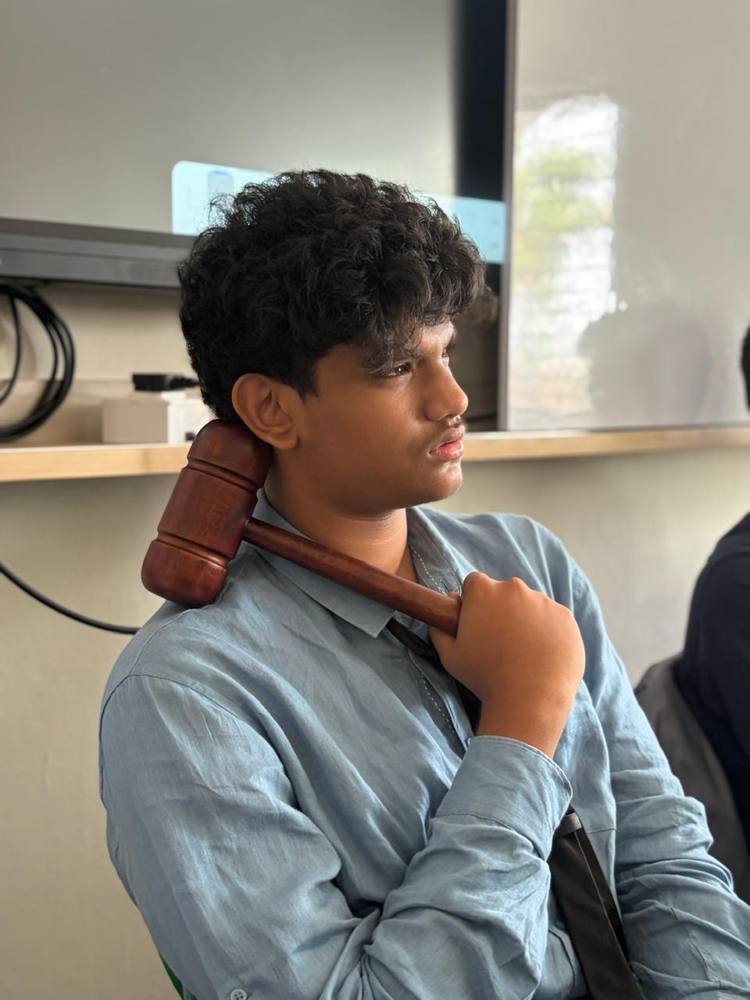
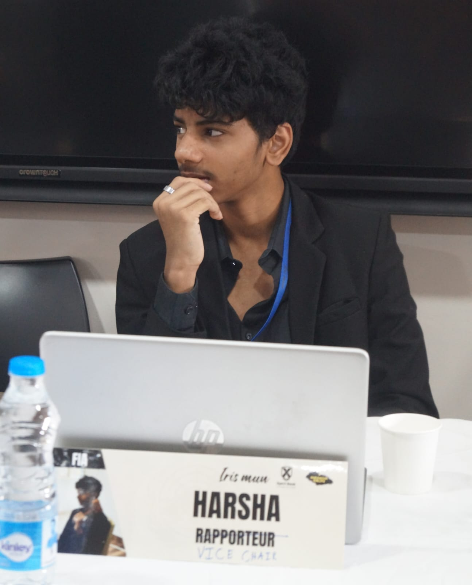

About the Committee
FIFA is the central governing body that regulates global soccer. Established in 1904, it is responsible for setting the sport's international rulebook and organizing its most celebrated competitive stages, including the FIFA World Cup.
Agenda
- Addressing global conflicts and peacekeeping operations
- Sanctions and international enforcement mechanisms
- Security implications of emerging technologies
Background Guide
Executive Board

Co-President: JV Vrishin
If you've ever seen someone crash out over a misunderstanding, there's a decent chance it was me. Beyond that, I'm J. V. Vrishin—a delegate with 20+ MUNs under my belt, last year's FIFA Vice Chair, and the proud owner of exactly one Best Delegate award despite all those conferences. Outside MUNs, I've spent six years playing professional football as a goalkeeper and will be attending the India camp at the end of August. My most questionable yet proudest accomplishment, however, remains finishing an entire family pack biryani at Bawarchi RTC X Roads in one sitting, all in the name of my idol, Jr. NTR.

Co-President: Kolli Harsha Vardhan Reddy
Short bio of the vice chairperson goes here.Harsha is an enthusiastic 12 grade student with an unwavering passion towards diplomacy and debate. A true sports lover, Harsha is a trained player in both cricket and football and finds immense joy watching matches and f1 races in his free time often finding inspiration from the discipline, strategy and perseverance they showcase. His love for cinema also fuels his curiosity about diverse cultures and global perspectives. Over the past three years he has been an active participant in the MUN circuit where his interest in international affairs has truly flourished. As a vice chair, Harsha is committed to ensure that every delegate has a memorable and enriching experience